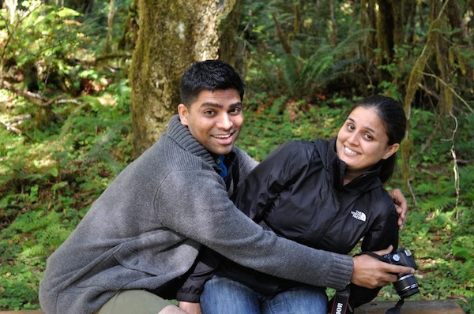

26/12
Ravi
Manu
2013
Our Story
August, 2007
After finishing his graduation in Pune, he gets admitted to UCI for Masters in Computer Science. Looking forward to coming to US, he join UCI Orkut community to get to know other people joining UCI too. There he meets her and they cross paths for the first time.....not literally though :)
August, 2007
Done with her Masters in Mathematics from Delhi, she packs her bags to leave for US. She is looking forward to attend UCI and while looking through the UCI Orkut community stumbles upon him. They exchange a few hi and hellos here and there before they both land in Irvine to attend UCI
September, 2007
They meet on the first day in UCI in orientation and glad to see each other. School begins and they keep on bumping into each other (or that's what he would want you to think !).
2008
They keep on meeting each other on campus every now and then. During the year and half at UCI, this acquaintance soon grew into a strong bond of friendship. They found things about each other some that were common and others that complement each other
February, 2009
He graduates from UCI and goes on to take a job with FICO in San Diego, while she still has six more months left to graduate. They bid goodbye to each other with a heavy heart and a promise to each other that no matter what they will keep in touch and be friends forever
December, 2009
She graduates from UCI and is looking for a job. She applies all over the place and eventually lands two job one in SF and one in San Diego in FICO. Lucky for him, she decides to take the job in FICO (God at work behind the scenes !!!)
January, 2010
While in San Diego working in the same company, things progressed very quickly. They went on countless lunches together as 'friends' that its hard to pinpoint our first date ever. They grew so fond of each other that spending time with each other was something no longer a choice but an necessity involuntary (so cliche I know ;) ) The foodies that they were, there are so many places that we visited and loved while in San Diego (Spices Thai, Cafe Secret, Curry-n-More to name a few frequent spots) We hardly noticed that we had become something more than just the best of friends.
December, 2009
She graduates from UCI and is looking for a job. She applies all over the place and eventually lands two job one in SF and one in San Diego in FICO. Lucky for him, she decides to take the job in FICO (God at work behind the scenes !!!)
January, 2010
While in San Diego working in the same company, things progressed very quickly. They went on countless lunches together as 'friends' that its hard to pinpoint our first date ever. They grew so fond of each other that spending time with each other was something no longer a choice but an necessity involuntary (so cliche I know ;) ) The foodies that they were, there are so many places that we visited and loved while in San Diego (Spices Thai, Cafe Secret, Curry-n-More to name a few frequent spots) We hardly noticed that we had become something more than just the best of friends.
December, 2009
She graduates from UCI and is looking for a job. She applies all over the place and eventually lands two job one in SF and one in San Diego in FICO. Lucky for him, she decides to take the job in FICO (God at work behind the scenes !!!)
Pictures

Wedding Ceremony
Thursday, 26 December 2013,
Country Inn & Suites
64/6 Site-iv, Sahibabad, Ghaziabad, UP 201010, India
Information about the Wedding
Comments


{kind=link}
{kind=link}
{kind=link}
{kind=link}
{kind=link}
{kind=link}
{kind=link}
{kind=link}
{kind=link}
{kind=link}
{kind=link}
{kind=link}
{kind=link}
{kind=link}